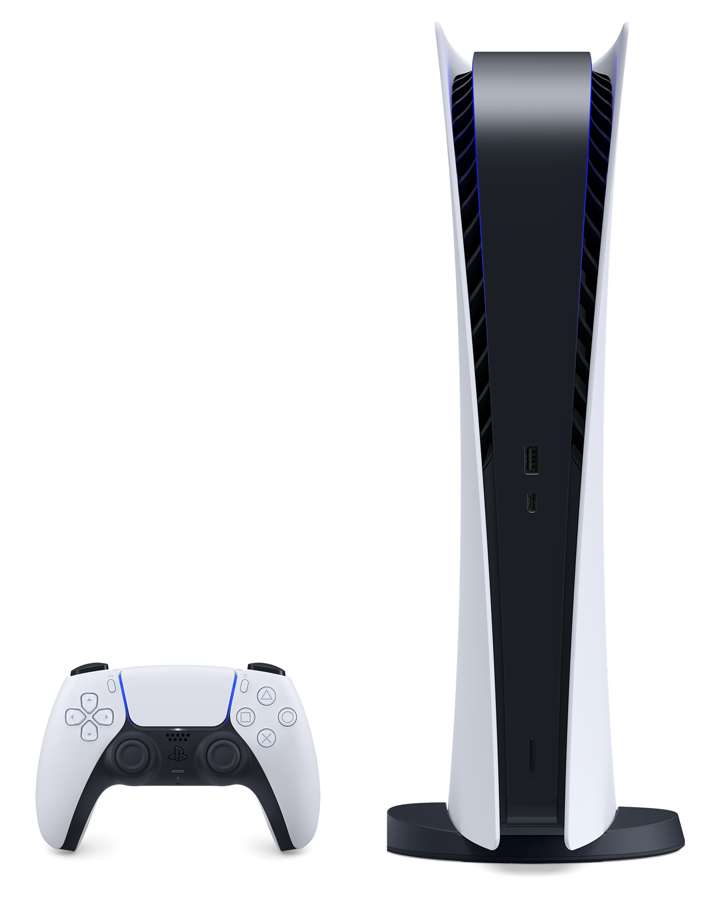

A linha Playstation!
A sony desde que começou no mercado tinha grande potencial devido ao carinho colocado no primeiro console e é por ele que vamos começar:-PS1 ou playstation One:

Tudo começou lá atrás, em 1995, com o lançamento do primeiro PlayStation, ou PSOne. O console tinha design elegante e seus jogos rodavam por meio de CDs, o que permitia processamento em 3D e som melhorado. O PSOne vendeu, em uma década, mais de 100 milhões de unidades no mundo.
O PlayStation Controller, de 1994, ganhou quatro botões nos ombros (ao invés de apenas dois) e deu mais possibilidades de gameplay aos jogadores. O acessório foi sucedido pelo Dual Analog Controller, em 1997, e depois pelo original DualShock, também em 97.
-Acessórios
Grande parte dos jogadores sempre gostou de multiplayer, mas era bem mais complicado jogar online na época do PSOne. Como a Internet ainda não era tão popularizada, a solução da Sony foi criar o PlayStation Link Cable, em 1995. O cabo permitia que jogadores conectassem dois consoles, por meio de duas TVs, para jogar multiplayer em alguns jogos que davam este suporte.
Em 1998 chegou o PocketStation, um cartão de memória externo com tela LCD embutida, além de controles básicos para mini games. O PSOne foi um dos primeiros consoles a usar um memory card externo.
-PS2:

O PlayStation 2 chega no ano 2000 e deu um salto de evolução em relação ao PSOne. Com visuais em 3D de melhor definição, o PS2 trouxe a possibilidade de se jogar online e um driver de DVD integrado, ou seja, além dos jogos agora também era possível curtir filmes num mesmo aparelho.
E junto com o novo console, chegou também um novo controle. O DualShock 2 trouxe de novidade dois botões analógicos que, além de ampliarem o grau de movimentação, também conseguiam detectar o nível de pressão feito sobre eles.
O PS2 vendeu mais de 155 milhões de unidades no mundo, se tornando o console mais vendido da história. Foram quase 4 mil jogos lançados para a plataforma.
-Acessórios:
Aproveitando as portas USB do PS2, a Sony lançou, em 2003, o EyeToy. O acessório era uma câmera digital que projetava a imagem do jogador na TV e também rastreava movimentos. Já em 2004 chegaram os SingStar mics, com dois microfones personalizados para o PS2, tornando possível jogar títulos musicais. No ano seguinte, foi a vez do Buzz! buzzers aparecer. O acessório veio para trazer mais realismo ao jogo Buzz! The Music Quiz de perguntas e respostas.
-PSP:

O PSP foi o primeiro portátil da Sony e o que fez mais sucesso. Lançado em 2004, no Japão, e em 2005, nos Estados Unidos e Europa, o PlayStation de bolso permitia, além de jogar, também assistir a vídeos, ouvir música e navegar na Internet.
Ao todo, o portátil teve cinco modelos lançados durante seus 10 anos de comercialização, um deles foi o PSP Go, de 2009, e sua tela deslizável. Mais tarde, o PSP também ganharia suporte para rodar alguns games selecionados do PS3, via Remote Play.
-Acessórios:
O único acessório lançado para o portátil da Sony foi a Go!Cam, em 2006. Ela dava ao PSP a habilidade de tirar fotos e gravar vídeos com áudio, o que permitiu o desenvolvimento de games baseados em realidade aumentada.
-Playstation 3(PS3):
Saindo do DVD e entrando na era do Blu-ray com o PlayStation 3, lançado em 2006, no Japão e Estados Unidos, e em 2007, na Europa. Também com a plataforma estreou o controle DualShock 3 que era capaz de dar retorno vibratório das ações nos jogos e entregou uma forma inicial de controle de movimentos.
O console trouxe um sistema online aprimorado, em relação ao PS2, e também marcou a estreia da PlayStation Network e da PlayStation Store. A chegada da PSN introduziu uma nova interface de usuário que permitia jogar online, acessar música, vídeos, TV, se comunicar e etc. Já na PlayStation Store, o jogador tinha acesso mais rápido para a compra e download de jogos.
Ainda sobre serviços, o PlayStation Home (que chegou em 2008) permitia que os jogadores pudessem decorar seu próprio apartamento digital, assistir a trailers e participar de eventos especiais.
Em 2010, os donos do PS3 ganharam a oportunidade assinar a PlayStation Plus, que garantiria aos assinantes acesso ao conteúdo premium do console, como jogos grátis mensalmente e descontos.
O PlayStation 3 também ganhou dois novos modelos, menores que o original – conhecido como “Fat”, chamados de PS3 Slim (em 2009) e o PS3 Super Slim (em 2012). Ambos traziam melhorias, principalmente, no sistema de resfriamento dos aparelhos.
-Acessórios:
O PlayStation Eye chegou ao mercado em 2007 como uma evolução do EyeToy (no PS2), com quatro vezes mais resolução e duas vezes mais taxas de quadros.
A câmera se tornou um acessório indispensável, para caso quisesse investir num PlayStation Move Motion Controller, ou PS Move, que chegaria em 2010. Com funcionamento similar ao controle do Nintendo Wii, o PS Move era usado em jogos bem específicos, especialmente mais causais e de esportes.
Em 2010, tentando aproveitar a tendência das TVs em 3D, a Sony lançou o Stereoscopic 3D movies and games, um óculos 3D que só funcionava em TVs 3D e em jogos e filmes que dessem suporte à tecnologia.
-PS Vita:

O PS Vita chegou em 2011, no Japão, e em 2012, nos Estados Unidos e Europa, com uma grande responsabilidade: substituir, à altura, o sucesso do PSP.
Mesmo sendo um poderoso portátil para a época, com tela OLED sensível ao toque de cinco polegadas, dois controles analógicos e touch pad traseiro… Bom… O sucesso não foi tão grande quanto a Sony esperava.
Ainda assim, quase 1.500 jogos foram lançados para o portátil até 2018. O PS Vita também tinha suporte ao Remote Play, sendo possível jogar alguns games do PS3 e PS4, compatíveis com o recurso, na tela do Vita.
-Playstation 4:
A oitava geração de consoles deu uma sacudida no próprio hardware e trouxe, para o PlayStation 4 (em 2013 nos Estados Unidos e Europa, e em 2014 no Japão) um sistema bem mais poderoso e com suporte a HDR, trazendo cores mais vibrantes, além de streaming integrado, recursos para mídias sociais com a possibilidade de compartilhar o gameplay e mais.
O controle Dualshock 4 ganhou novo design e, além de ter ficado mais confortável de usar, também acrescentou uma barra luminosa, mini alto falante embutido, botão Share, e um touch pad. Também foram feitas melhorias em seu giroscópio.
Tanto a PlayStation Network quanto a PlayStation Store também receberam upgrades. Já em 2014, a Sony estreou um novo serviço em nuvem: o PlayStation Now. Com ele é possível ter acesso a centenas de jogos de PS3 e PS4. É possível, inclusive, jogar num PC Windows usando o app e um Dualshock 4.
Assim como o PS3, o PS4 também ganhou alguns novos modelos com o passar do tempo. O PS4 Slim, mais compacto, foi lançado em 2016 e o PS4 Pro, versão mais potente que o console original e com suporte a 4K e HDR, chegou no mesmo ano.
-Acessórios:
A PlayStation Camera foi lançada em 2013 como sucessora da PlayStation Eye e, além de ajudar em streamings pelo console, também é capaz de fazer reconhecimento facial e receber comandos de voz.
O equipamento conta com duas câmeras e é essencial para usar em conjunto com o PlayStation VR, lançado em 2016. Os óculos de realidade virtual são compatíveis com alguns games e ainda não caiu totalmente nas graças do público. Talvez por conta do preço.
-PlayStation 5:

E finalmente chegamos à nona geração de videogames com PlayStation 5. O console lançado em 2020 traz sistema de rastreamento de raios, para luzes e sombras mais nítidas, suporte a 4K, HDR e até 120 quadros por segundo – se o jogo der suporte, é claro.
O PS5 também acompanha uma saída em 8K, para quem pode se dar ao luxo de jogar com resolução de 4320p, e um SSD para armazenamento – que promete carregamentos muito mais rápidos.
O aparelho também traz retrocompatibilidade para a maioria dos jogos do PS4 e integração com o PlayStation VR. O controle DualSense para o PS5 teve uma nova mudança no design e agora oferece feedback tátil imersivo, além de acompanhar gatilhos dinâmicos e adaptáveis, e ter microfone integrado.
-Acessórios:
Aproveitando o próprio anúncio do PlayStation 5, a Sony também apresentou os acessórios compatíveis com o console, como:
- Uma base de carregamento para até dois controles sem fio Dual Sense;
- O headset sem fio Pulse 3D (com carregamento via USB tipo C e dois microfones com cancelamento de ruído);
- Controle de mídia para filmes, serviços de streaming e etc;
- E câmera HD, evolução da PlayStation Camera, com captura em Full HD.